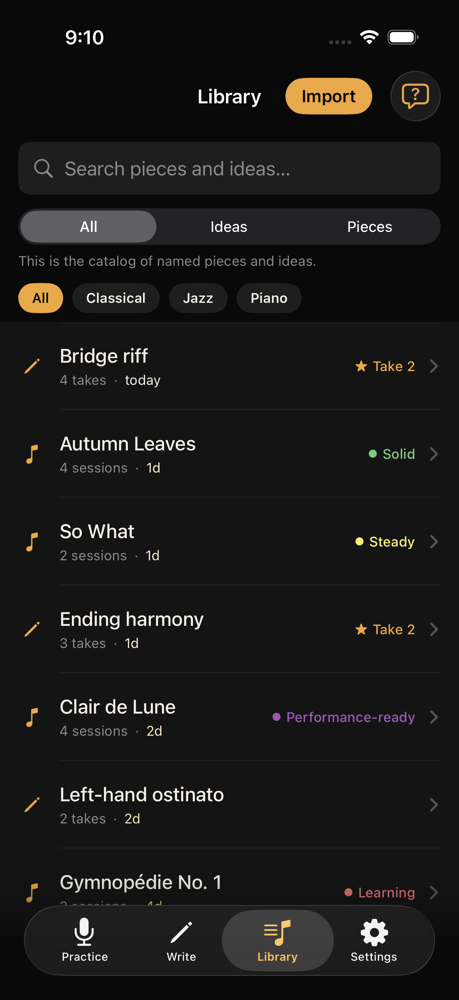

Tap record. Just play.
Scales, difficult sections, and the gruntwork that makes a piece take shape. Woodshed gets out of your way while you play. No need to touch your phone again until you’re done.


One tap records your practicing and song ideas.
Woodshed organizes them and helps you hear your progress.
Practice
Scales, difficult sections, and the gruntwork that makes a piece take shape. Woodshed gets out of your way while you play. No need to touch your phone again until you’re done.
Woodshed splits your session into segments. Over time, it recognizes what you play and suggests which piece each segment is. Confirm or correct the matches, and rate each one at your leisure.

Open any piece, see your progress on the screen, and hear it by tapping through your playing history.

Write
When an idea comes to mind, record it with one tap. Later you can name it, add more takes, attach notes or lyrics, and mark a best take to come back to or share.
Just enough structure to shape an idea into a song. Not a DAW, not a pile of voice memos.

Library
Practice and Write are two rooms in the same library — every piece and idea you record is saved, catalogued, taggable, and searchable.

Tap the waveform icon to search your library musically. Matches show as you play.